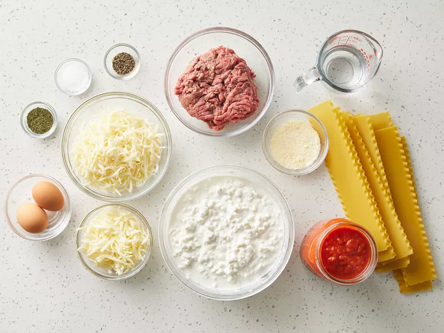
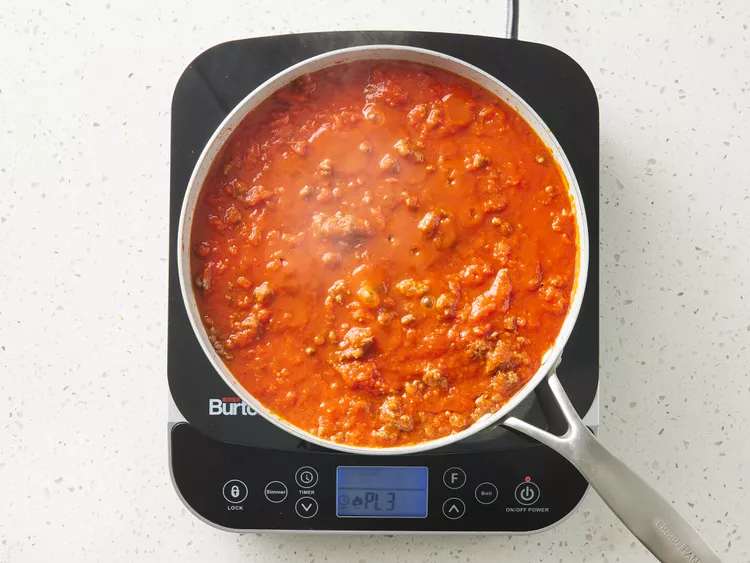

An easy lasagna recipe that saves me lots of time. This dish satisfies everyone in the family. Try it tonight!
| Prep Time: | Cooking Time: | Additional Time: |
| 10 Mins | 1hr 10 Mins | 10 Mins |
| Total Time: | Servings: | Yield: |
| 1hr 30 Mins | 12 | 1 9x13-inch lasagna |
These are the ingredients you'll need to make this easy lasagna recipe:
You’ll find the full, step-by-step recipe below — but here’s a brief overview of what you can expect when you make homemade easy lasagna:
For mouthwatering serving inspiration, explore our collection of Easy Side Dishes for Lasagna. Here are a few of the recipes you’ll find:
Gather all ingredients and preheat the oven to 350 degrees F (175 degrees C).
Heat a large skillet over medium-high heat. Cook and stir ground beef in the hot skillet until browned and crumbly, 8 to 10 minutes. Drain and discard grease. Stir in spaghetti sauce and simmer for 5 minutes.
Combine cottage cheese, 2 cups of mozzarella cheese, eggs, 1/2 of the grated Parmesan cheese, dried parsley, salt, and pepper in a large bowl.

Spread 3/4 cup of sauce in a 9x13-inch baking dish. Cover with 3 uncooked lasagna noodles, 1 3/4 cups of cheese mixture, and 1/4 cup sauce; repeat layers once more. Top with remaining 3 noodles, sauce, mozzarella, and Parmesan cheese. Pour 1/2 cup water along the edges of the dish. Cover tightly with aluminum foil.

Bake in the preheated oven for 45 minutes. Uncover and bake for an additional 10 minutes. Let stand 10 minutes before serving.

Serve and enjoy!

| 377 | 17g | 26g | 29g |
| Calories | Fat | Carbs | Protein |